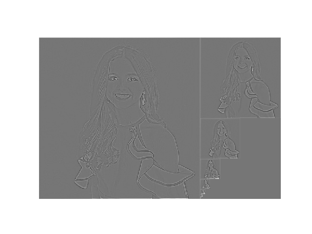
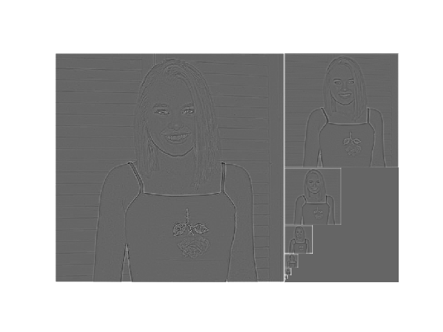
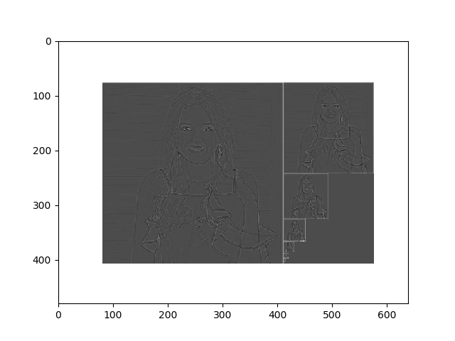
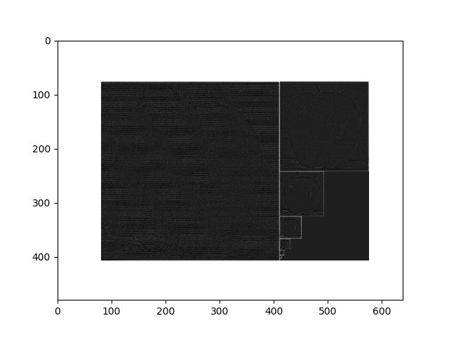
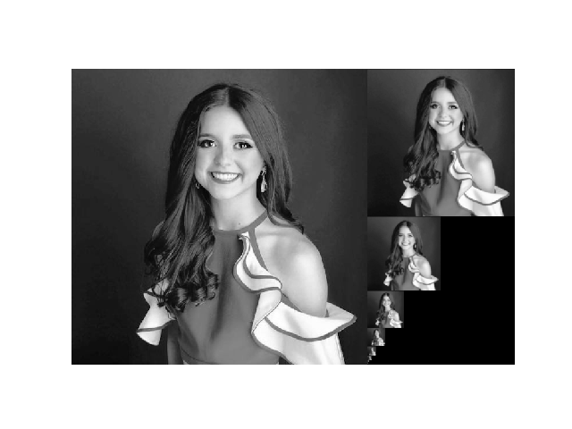
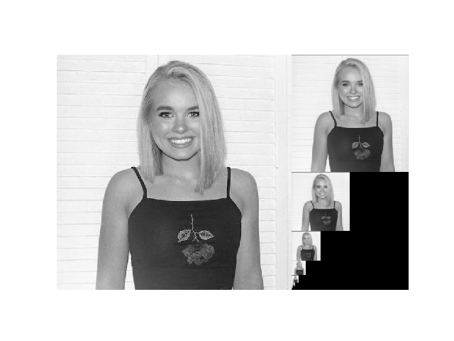
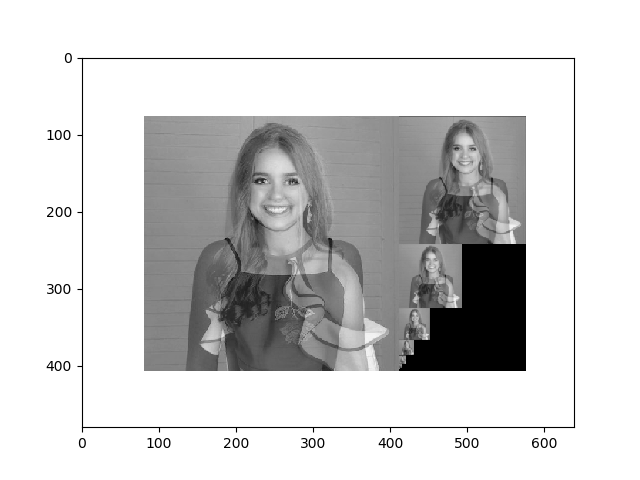
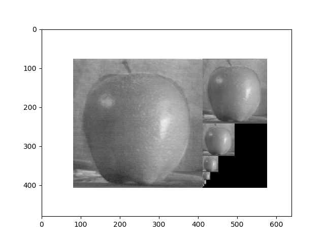
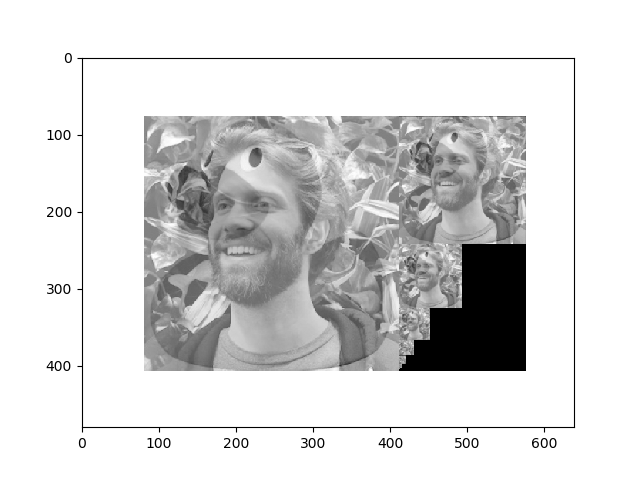
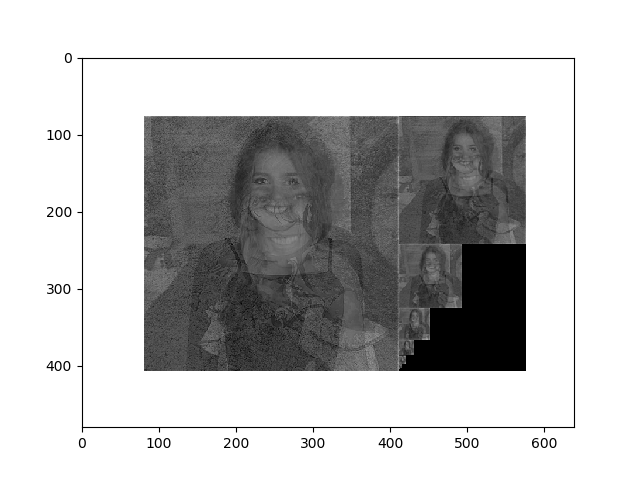

The first section shows the blending of images' Laplacian pyramids. The second sections shows the blending of images' Gaussian pyramids. The third section shows results where both pyramids were used.
#gets the laplacian pyramids of two images and returns the composite
def blendEmLap(img1,img2):
oG,oL = pyramids(img1)
aG,aL = pyramids(img2)
composite_image,composite_image2 = reconstruct(oL,aL,img1)
blended = composite_image2+composite_image
Laplacian of first twin
Laplacian of second twin
Laplacian blend of both twins
Laplacian of an orange and apple

#gets the gaussian pyramids of two images and returns the composite
def blendEmGaus(img1,img2):
oG,oL = pyramids(img1)
aG,aL = pyramids(img2)
composite_image,composite_image2 = reconstruct(oG,aG,img1)
blended = composite_image2+composite_image
Gaussian of first twin
Gaussian of second twin
Gaussian blend of both twins
Gaussian of an orange and apple
Gaussian of Kristof and a duck
Gaussian + Laplacian of twins
Gaussian + Laplacian of all siblings
It seems that the Gaussian blending was the most successful, but only when the images had similar features that we're lined up correctly. The twins (my sister and I) and the apple and orange look the best because the fruits' shapes matched up, and my sister and my eyes' matched up. The last siblings image in "Gaussian and Laplacian blending" and the duck and Kristof blend were the least successful, Kristof-duck because they did not have similar features, and the siblings because my sister and brother's features were not matched up to my twin and I's.